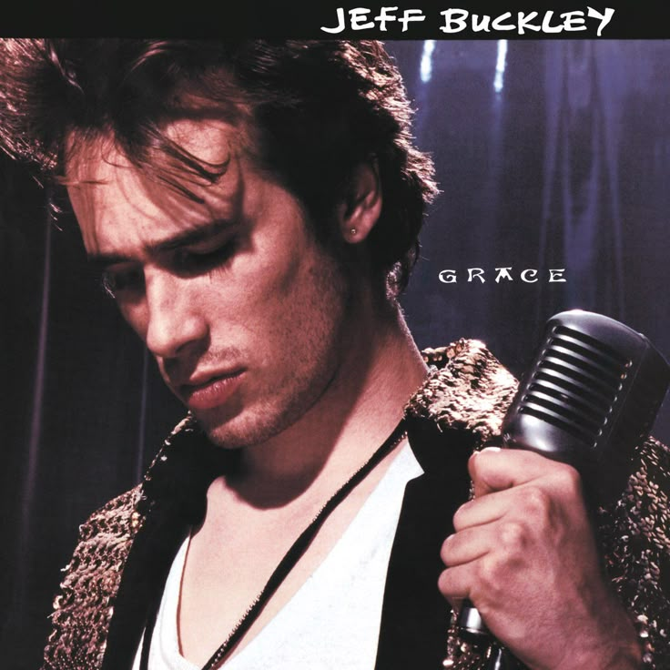
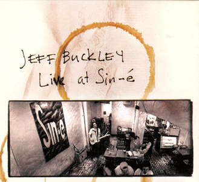

Biografia
Jeffrey Scott Buckley (1966 – 1997) foi um aclamado cantor, compositor e guitarrista norte-americano. Dono de uma das vozes mais marcantes e acrobáticas da história do rock alternativo, Jeff herdou o DNA musical de seu pai, o também cantor Tim Buckley, embora quase não tenham convivido.
Após anos atuando como guitarrista de estúdio em Los Angeles, ele conquistou Nova York no início dos anos 90 com apresentações intimistas no lendário café Sin-é, no East Village. Sua musicalidade única misturava influências que iam do rock clássico como Led Zeppelin ao jazz, folk e blues.
Infelizmente, sua brilhante trajetória foi interrompida de forma trágica e precoce aos 30 anos de idade, quando faleceu por afogamento acidental nas águas do Rio Wolf, afluente do Mississippi, em maio de 1997.

Discografia Essencial

Grace
1994 • Álbum de EstúdioO único álbum de estúdio completo lançado em vida. Uma obra-prima atemporal que inclui clássicos absolutos como "Last Goodbye", "Lover, You Should've Come Over" e a sua lendária e definitiva versão de "Hallelujah" de Leonard Cohen.

Sketches for My Sweetheart the Drunk
1998 • PóstumoUma compilação de demos gravadas em quatro canais e sessões de estúdio inacabadas que Jeff estava preparando para o seu segundo álbum antes de sua partida repentina.

Live at Sin-é
1993 • EP OriginalO álbum Live at Sin-é, lançado originalmente em 1993 como um EP e posteriormente expandido em 2003 na sua "Legacy Edition", registra o início da carreira comercial de Jeff Buckley.